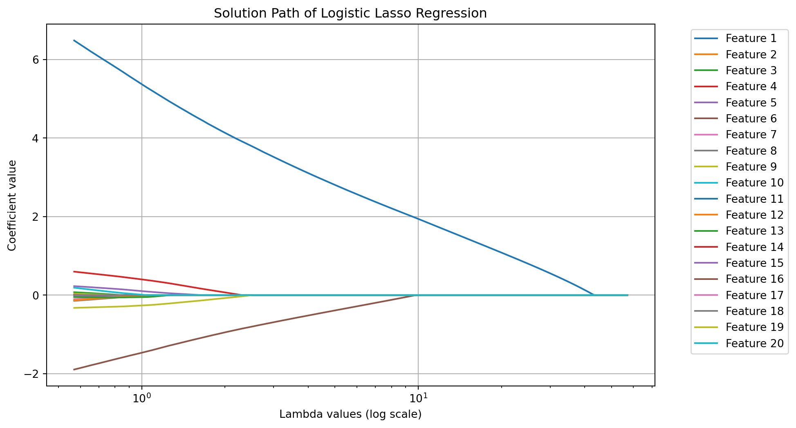

A collection of functions are available from scipy.stats.
Comparing the locations of two samples
ttest_ind: t-test for two independent samples
ttest_rel: t-test for paired samples
ranksums: Wilcoxon rank-sum test for two independent samples
wilcoxon: Wilcoxon signed-rank test for paired samples
Comparing the locations of multiple samples
f_oneway: one-way ANOVA
kruskal: Kruskal-Wallis H-test
Tests for associations in contigency tables
chi2_contingency: Chi-square test of independence of variables
fisher_exact: Fisher exact test on a 2x2 contingency table
Goodness of fit
goodness_of_fit: distribution could contain unspecified parameters
anderson: Anderson-Darling test
kstest: Kolmogorov-Smirnov test
chisquare: one-way chi-square test
normaltest: test for normality
Since R has a richer collections of statistical functions, we can call R function from Python with rpy2. See, for example, a blog on this subject.
For example, fisher_exact can only handle 2x2 contingency tables. For contingency tables larger than 2x2, we can call fisher.test() from R through rpy2. See this StackOverflow post. Note that the . in function names and arguments are replaced with _.
Loading custom .Rprofileborough BRONX BROOKLYN MANHATTAN QUEENS STATEN ISLAND
injury
0 149 345 164 249 65
1 129 266 127 227 28
Fisher's Exact Test for Count Data with simulated p-value (based on
2000 replicates)
data: structure(c(149L, 129L, 345L, 266L, 164L, 127L, 249L, 227L, 65L, 28L), dim = c(2L, 5L))
p-value = 0.03598
alternative hypothesis: two.sided
6.2 Statistical Modeling
Statistical modeling is a cornerstone of data science, offering tools to understand complex relationships within data and to make predictions. Python, with its rich ecosystem for data analysis, features the statsmodels package— a comprehensive library designed for statistical modeling, tests, and data exploration. statsmodels stands out for its focus on classical statistical models and compatibility with the Python scientific stack (numpy, scipy, pandas).
6.2.1 Installation of statsmodels
To start with statistical modeling, ensure statsmodels is installed:
Let’s use a formula to specify the regression model as in R, and fit a robust linear model (rlm) instead of OLS. Note that the model specification and the function interface is similar to R.
If the model instance has been used for another fit with different fit parameters, then the fit options might not be the correct ones anymore .
For model diagnostics, one can check residual plots.
import matplotlib.pyplot as pltmyOlsFit = smf.ols(formula ="y ~ x1 + x2 + x3 + x4 + x5", data = df).fit()fig = plt.figure(figsize = (6, 6))## residual versus x1; can do the same for other covariatesfig = sma.graphics.plot_regress_exog(myOlsFit, 'x1', fig=fig)
A linear regression model cannot be applied to presence/absence or count data. Generalized Linear Models (GLM) extend the classical linear regression to accommodate such response variables, that follow distributions other than the normal distribution. GLMs consist of three main components:
Random Component: This specifies the distribution of the response variable \(Y\). It is assumed to be from the exponential family of distributions, such as Binomial for binary data and Poisson for count data.
Systematic Component: This consists of the linear predictor, a linear combination of unknown parameters and explanatory variables. It is denoted as \(\eta = X\beta\), where \(X\) represents the explanatory variables, and \(\beta\) represents the coefficients.
Link Function: The link function, \(g\), provides the relationship between the linear predictor and the mean of the distribution function. For a GLM, the mean of \(Y\) is related to the linear predictor through the link function as \(\mu = g^{-1}(\eta)\).
GLMs adapt to various data types through the selection of appropriate link functions and probability distributions. Here, we outline four special cases of GLM: normal regression, logistic regression, Poisson regression, and gamma regression.
Normal Regression (Linear Regression). In normal regression, the response variable has a normal distribution. The identity link function is typically used, making this case equivalent to classical linear regression.
Use Case: Modeling continuous data where residuals are normally distributed.
Link Function: Identity, \(g(\mu) = \mu\).
Distribution: Normal.
Logistic Regression. Logistic regression is used for binary response variables. It employs the logit link function to model the probability that an observation falls into one of two categories.
Use Case: Binary outcomes (e.g., success/failure).
Link Function: Logit, \(g(\mu) = \log\frac{\mu}{1-\mu}\).
Distribution: Binomial.
Poisson Regression. Poisson regression models count data using the Poisson distribution. It’s ideal for modeling the rate at which events occur.
Use Case: Count data, such as the number of occurrences of an event.
Link Function: Log, \(g(\mu) = \log(\mu)\)
Distribution: Poisson.
Gamma Regression. Gamma regression is suited for modeling positive continuous variables, especially when data are skewed and variance increases with the mean.
Use Case: Positive continuous outcomes with non-constant variance.
Link Function: Inverse \(g(\mu) = \frac{1}{\mu}\).
Distribution: Gamma.
Each GLM variant addresses specific types of data and research questions, enabling precise modeling and inference based on the underlying data distribution. Prediction will need the inverse link function which transforms the linear predictor to the expectation of the outcome.
To demonstrate the validation of logistic regression models, we first create a simulated dataset with binary outcomes. This setup involves generating logistic probabilities and then drawing binary outcomes based on these probabilities.
import numpy as npimport pandas as pdimport statsmodels.api as sm# Set seed for reproducibilitynp.random.seed(42)# Create a DataFrame with random features named `simdat`simdat = pd.DataFrame(np.random.randn(1000, 5), columns=['x1', 'x2', 'x3', 'x4', 'x5'])# Calculating the linear combination of inputs plus an intercepteta = simdat.dot([2, 2, 2, 0, 0]) -5# Applying the logistic function to get probabilities using statsmodels' logit linkp = sm.families.links.Logit().inverse(eta)# Generating binary outcomes based on these probabilities and adding them to `simdat`simdat['yb'] = np.random.binomial(1, p, p.size)# Display the first few rows of the dataframeprint(simdat.head())
Fit a logistic regression for y1b with the formula interface.
import statsmodels.formula.api as smf# Specify the model formulaformula ='yb ~ x1 + x2 + x3 + x4 + x5'# Fit the logistic regression model using glm and a formulafit = smf.glm(formula=formula, data=simdat, family=sm.families.Binomial()).fit()# Print the summary of the modelprint(fit.summary())
Once a logistic regression model is fitted, interpreting its results is crucial for understanding how predictor variables influence the probability of the outcome. Logistic regression models the log-odds of the response variable as a linear function of the predictor variables. To ease the intrepretation, consider a logistic model with a single binary predictor (e.g., treatment indicator):
\[
\log\left(\frac{\mu}{1 - \mu}\right) = \beta_0 + \beta_1 X
\]
where \(\mu = E(Y \mid X)\) represents the probability of the positive class, and \(\beta_1\) is the estimated coefficient for the binary predictor \(X\).
6.3.1 Interpreting Coefficients
If \(X\) is a binary variable (e.g., 0 for “No” and 1 for “Yes”), \(\beta_1\) represents the difference in log-odds between the two groups. Exponentiating \(\beta_1\) gives the odds ratio:
This allows for a direct interpretation of how being in one category of \(X\) influences the predicted probability of the outcome. By construction, this value is always in \((0, 1)\).
6.3.3 Evaluating Statistical Significance
The significance of \(\beta_1\) is assessed using standard errors and p-values:
A small p-value (e.g., < 0.05) suggests that \(X\) has a statistically significant effect on the outcome.
Confidence intervals for \(e^{\beta_1}\) help understand the precision of odds ratio estimates.
6.3.4 Confusion Matrix
Validating the performance of logistic regression models is crucial to assess their effectiveness and reliability. This section explores key metrics used to evaluate the performance of logistic regression models, starting with the confusion matrix, then moving on to accuracy, precision, recall, F1 score, and the area under the ROC curve (AUC). Using simulated data, we will demonstrate how to calculate and interpret these metrics using Python.
The confusion matrix is a fundamental tool used for calculating several other classification metrics. It is a table used to describe the performance of a classification model on a set of data for which the true values are known. The matrix displays the actual values against the predicted values, providing insight into the number of correct and incorrect predictions.
Actual
Predicted Positive
Predicted Negative
Actual Positive
True Positive (TP)
False Negative (FN)
Actual Negative
False Positive (FP)
True Negative (TN)
Four entries in the confusion matrix:
True Positive (TP): The cases in which the model correctly predicted the positive class.
False Positive (FP): The cases in which the model incorrectly predicted the positive class (i.e., the model predicted positive, but the actual class was negative).
True Negative (TN): The cases in which the model correctly predicted the negative class.
False Negative (FN): The cases in which the model incorrectly predicted the negative class (i.e., the model predicted negative, but the actual class was positive).
Four rates from the confusion matrix with actual (row) margins:
True positive rate (TPR): TP / (TP + FN). Also known as sensitivity.
False negative rate (FNR): FN / (TP + FN). Also known as miss rate.
False positive rate (FPR): FP / (FP + TN). Also known as false alarm, fall-out.
True negative rate (TNR): TN / (FP + TN). Also known as specificity.
Note that TPR and FPR do not add up to one. Neither do FNR and FPR.
Positive predictive value (PPV): TP / (TP + FP). Also known as precision.
False discovery rate (FDR): FP / (TP + FP).
False omission rate (FOR): FN / (FN + TN).
Negative predictive value (NPV): TN / (FN + TN).
Note that PPV and NP do not add up to one.
6.3.5 Accuracy
Accuracy measures the overall correctness of the model and is defined as the ratio of correct predictions (both positive and negative) to the total number of cases examined.
Accuracy = (TP + TN) / (TP + TN + FP + FN)
Imbalanced Classes: Accuracy can be misleading if there is a significant imbalance between the classes. For instance, in a dataset where 95% of the samples are of one class, a model that naively predicts the majority class for all instances will still achieve 95% accuracy, which does not reflect true predictive performance.
Misleading Interpretations: High overall accuracy might hide the fact that the model is performing poorly on a smaller, yet important, segment of the data.
6.3.6 Precision
Precision (or PPV) measures the accuracy of positive predictions. It quantifies the number of correct positive predictions made.
Precision = TP / (TP + FP)
Neglect of False Negatives: Precision focuses solely on the positive class predictions. It does not take into account false negatives (instances where the actual class is positive but predicted as negative). This can be problematic in cases like disease screening where missing a positive case (disease present) could be dangerous.
Not a Standalone Metric: High precision alone does not indicate good model performance, especially if recall is low. This situation could mean the model is too conservative in predicting positives, thus missing out on a significant number of true positive instances.
6.3.7 Recall
Recall (Sensitivity or TPR) measures the ability of a model to find all relevant cases (all actual positives).
Recall = TP / (TP + FN)
Neglect of False Positives: Recall does not consider false positives (instances where the actual class is negative but predicted as positive). High recall can be achieved at the expense of precision, leading to a large number of false positives which can be costly or undesirable in certain contexts, such as in spam detection.
Trade-off with Precision: Often, increasing recall decreases precision. This trade-off needs to be managed carefully, especially in contexts where both false positives and false negatives carry significant costs or risks.
6.3.8 F-beta Score
The F-beta score is a weighted harmonic mean of precision and recall, taking into account a \(\beta\) parameter such that recall is considered \(\beta\) times as important as precision: \[
(1 + \beta^2) \frac{\text{precision} \cdot \text{recall}}
{\beta^2 \text{precision} + \text{recall}}.
\]
See stackexchange post for the motivation of \(\beta^2\) instead of just \(\beta\).
The F-beta score reaches its best value at 1 (perfect precision and recall) and worst at 0.
If reducing false negatives is more important (as might be the case in medical diagnostics where missing a positive diagnosis could be critical), you might choose a beta value greater than 1. If reducing false positives is more important (as in spam detection, where incorrectly classifying an email as spam could be inconvenient), a beta value less than 1 might be appropriate.
The F1 Score is a specific case of the F-beta score where beta is 1, giving equal weight to precision and recall. It is the harmonic mean of Precision and Recall and is a useful measure when you seek a balance between Precision and Recall and there is an uneven class distribution (large number of actual negatives).
The Receiver Operating Characteristic (ROC) curve is a plot that illustrates the diagnostic ability of a binary classifier as its discrimination threshold is varied. It shows the trade-off between the TPR and FPR. The ROC plots TPR against FPR as the decision threshold is varied. It can be particularly useful in evaluating the performance of classifiers when the class distribution is imbalanced,
Increasing from \((0, 0)\) to \((1, 1)\).
Best classification passes \((0, 1)\).
Classification by random guess gives the 45-degree line.
Area between the ROC and the 45-degree line is the Gini coefficient, a measure of inequality.
Area under the curve (AUC) of ROC thus provides an important metric of classification results.
The Area Under the ROC Curve (AUC) is a scalar value that summarizes the performance of a classifier. It measures the total area underneath the ROC curve, providing a single metric to compare models. The value of AUC ranges from 0 to 1:
AUC = 1: A perfect classifier, which perfectly separates positive and negative classes.
AUC = 0.5: A classifier that performs no better than random chance.
AUC < 0.5: A classifier performing worse than random.
The AUC value provides insight into the model’s ability to discriminate between positive and negative classes across all possible threshold values.
6.3.10 Demonstration
Let’s apply these metrics to the simdat dataset to understand their practical implications. We will fit a logistic regression model, make predictions, and then compute accuracy, precision, and recall.
import numpy as npfrom sklearn.linear_model import LogisticRegressionfrom sklearn.model_selection import train_test_splitfrom sklearn.metrics import ( accuracy_score, precision_score, recall_score, confusion_matrix, f1_score, roc_curve, auc)import matplotlib.pyplot as pltfrom sklearn.datasets import make_classification# Generate synthetic dataX, y = make_classification(n_samples=1000, n_features=20, random_state=42)# Split the dataset into training and testing setsX_train, X_test, y_train, y_test = train_test_split(X, y, test_size=0.25, random_state=42)# Fit the logistic regression modelmodel = LogisticRegression()model.fit(X_train, y_train)# Predict labels on the test sety_pred = model.predict(X_test)# Get predicted probabilities for ROC curve and AUCy_scores = model.predict_proba(X_test)[:, 1] # Probability for the positive class# Compute confusion matrixcm = confusion_matrix(y_test, y_pred)# Calculate accuracy, precision, and recallaccuracy = accuracy_score(y_test, y_pred)precision = precision_score(y_test, y_pred)recall = recall_score(y_test, y_pred)# Print confusion matrix and metricsprint("Confusion Matrix:\n", cm)print(f"Accuracy: {accuracy:.2f}")print(f"Precision: {precision:.2f}")print(f"Recall: {recall:.2f}")
We could pick the best threshold that optmizes F1-score/
# Compute F1 score for each thresholdf1_scores = []for thresh in thresholds: y_pred_thresh = (y_scores >= thresh).astype(int) # Apply threshold to get binary predictions f1 = f1_score(y_test, y_pred_thresh) f1_scores.append(f1)# Find the best threshold (the one that maximizes F1 score)best_thresh = thresholds[np.argmax(f1_scores)]best_f1 =max(f1_scores)# Print the best threshold and corresponding F1 scoreprint(f"Best threshold: {best_thresh:.4f}")print(f"Best F1 score: {best_f1:.2f}")
Best threshold: 0.3960
Best F1 score: 0.89
6.4 LASSO Logistic Models
The Least Absolute Shrinkage and Selection Operator (LASSO) (Tibshirani, 1996), is a regression method that performs both variable selection and regularization. LASSO imposes an L1 penalty on the regression coefficients, which has the effect of shrinking some coefficients exactly to zero. This results in simpler, more interpretable models, especially in situations where the number of predictors exceeds the number of observations.
6.4.1 Theoretical Formulation of the Problem
The objective function for LASSO logistic regression can be expressed as,
\(\hat{p}_i = \frac{1}{1 + e^{-X_i\beta}}\) is the predicted probability for the \(i\)-th sample.
\(y_i\) represents the actual class label (binary: 0 or 1).
\(X_i\) is the feature vector for the \(i\)-th observation.
\(\beta\) is the vector of model coefficients (including the intercept).
\(\lambda\) is the regularization parameter that controls the trade-off between model fit and sparsity (higher \(\lambda\)) encourages sparsity by shrinking more coefficients to zero).
The lasso penalty encourages the sum of the absolute values of the coefficients to be small, effectively shrinking some coefficients to zero. This results in sparser solutions, simplifying the model and reducing variance without substantial increase in bias.
Practical benefits of LASSO:
Dimensionality Reduction: LASSO is particularly useful when the number of features \(p\) is large, potentially even larger than the number of observations \(n\), as it automatically reduces the number of features.
Preventing Overfitting: The L1 penalty helps prevent overfitting by constraining the model, especially when \(p\) is large or there is multicollinearity among features.
Interpretability: By selecting only the most important features, LASSO makes the resulting model more interpretable, which is valuable in fields like bioinformatics, economics, and social sciences.
6.4.2 Solution Path
To illustrate the effect of the lasso penalty in logistic regression, we can plot the solution path of the coefficients as a function of the regularization parameter \(\lambda\). This demonstration will use a simulated dataset to show how increasing \(\lambda\) leads to more coefficients being set to zero.
import numpy as npfrom sklearn.datasets import make_classificationfrom sklearn.linear_model import LogisticRegressionfrom sklearn.preprocessing import StandardScalerimport matplotlib.pyplot as plt# Step 1: Generate a classification datasetX, y = make_classification(n_samples=100, n_features=20, n_informative=2, random_state=42)# Step 2: Get a lambda grid given length of lambda and min_ratio of lambda_maxdef get_lambda_l1(xs: np.ndarray, y: np.ndarray, nlambda: int, min_ratio: float): ybar = np.mean(y) xbar = np.mean(xs, axis=0) xs_centered = xs - xbar xty = np.dot(xs_centered.T, (y - ybar)) lmax = np.max(np.abs(xty)) lambdas = np.logspace(np.log10(lmax), np.log10(min_ratio * lmax), num=nlambda)return lambdas# Step 3: Calculate lambda valuesnlambda =100min_ratio =0.01lambda_values = get_lambda_l1(X, y, nlambda, min_ratio)# Step 4: Standardize the featuresscaler = StandardScaler()X_scaled = scaler.fit_transform(X)# Step 5: Initialize arrays to store the coefficients for each lambda valuecoefficients = []# Step 6: Fit logistic regression with L1 regularization (Lasso) for each lambda valuefor lam in lambda_values: model = LogisticRegression(penalty='l1', solver='liblinear', C=1/lam, max_iter=1000) model.fit(X_scaled, y) coefficients.append(model.coef_.flatten())# Convert coefficients list to a NumPy array for plottingcoefficients = np.array(coefficients)# Step 7: Plot the solution path for each featureplt.figure(figsize=(10, 6))for i inrange(coefficients.shape[1]): plt.plot(lambda_values, coefficients[:, i], label=f'Feature {i +1}')plt.xscale('log')plt.xlabel('Lambda values (log scale)')plt.ylabel('Coefficient value')plt.title('Solution Path of Logistic Lasso Regression')plt.grid(True)plt.legend(bbox_to_anchor=(1.05, 1), loc='upper left')plt.show()

6.4.3 Selection the Tuning Parameter
In logistic regression with LASSO regularization, selecting the optimal value of the regularization parameter \(C\) (the inverse of \(\lambda\)) is crucial to balancing the model’s bias and variance. A small \(C\) value (large \(\lambda\)) increases the regularization effect, shrinking more coefficients to zero and simplifying the model. Conversely, a large \(C\) (small \(\lambda\)) allows the model to fit the data more closely.
The best way to select the optimal \(C\) is through cross-validation. In cross-validation, the dataset is split into several folds, and the model is trained on some folds while evaluated on the remaining fold. This process is repeated for each fold, and the results are averaged to ensure the model generalizes well to unseen data. The \(C\) value that results in the best performance is selected.
The performance metric used in cross-validation can vary based on the task. Common metrics include:
Log-loss: Measures how well the predicted probabilities match the actual outcomes.
Accuracy: Measures the proportion of correctly classified instances.
F1-Score: Balances precision and recall, especially useful for imbalanced classes.
AUC-ROC: Evaluates how well the model discriminates between the positive and negative classes.
In Python, the LogisticRegressionCV class from scikit-learn automates cross-validation for logistic regression. It evaluates the model’s performance for a range of \(C\) values and selects the best one.
import numpy as npfrom sklearn.linear_model import LogisticRegressionCVfrom sklearn.model_selection import train_test_splitfrom sklearn.datasets import make_classificationfrom sklearn.metrics import accuracy_score# Generate synthetic dataX, y = make_classification(n_samples=1000, n_features=20, random_state=42)# Split the dataset into training and testing setsX_train, X_test, y_train, y_test = train_test_split(X, y, test_size=0.25, random_state=42)# Initialize LogisticRegressionCV with L1 penalty for Lasso and cross-validationlog_reg_cv = LogisticRegressionCV( Cs=np.logspace(-4, 4, 20), # Range of C values (inverse of lambda) cv=5, # 5-fold cross-validation penalty='l1', # Lasso regularization (L1 penalty) solver='liblinear', # Solver for L1 regularization scoring='accuracy', # Optimize for accuracy max_iter=10000# Ensure convergence)# Train the model with cross-validationlog_reg_cv.fit(X_train, y_train)# Best C value (inverse of lambda)print(f"Best C value: {log_reg_cv.C_[0]}")# Evaluate the model on the test sety_pred = log_reg_cv.predict(X_test)test_accuracy = accuracy_score(y_test, y_pred)print(f"Test Accuracy: {test_accuracy:.2f}")# Display the coefficients of the best modelprint("Model Coefficients:\n", log_reg_cv.coef_)
Best C value: 0.08858667904100823
Test Accuracy: 0.86
Model Coefficients:
[[ 0. 0. 0.05552448 0. 0. 1.90889734
0. 0. 0. 0. 0.0096863 0.23541942
0. 0. -0.0268928 0. 0. 0.
0. 0. ]]
6.4.4 Preparing for Logistic Regression Fitting
The LogisticRegression() function in scikit.learn takes the design matrix of the regression as input, which needs to be prepared with care from the covariates or features that we have.
6.4.4.1 Continuous Variables
For continuous variables, it is often desirable to standardized them so that they have mean zero and standard deviation one. There are multiple advantages of doing so. It improves numerical stability in algorithms like logistic regression that rely on gradient descent, ensuring faster convergence and preventing features with large scales from dominating the optimization process. Standardization also enhances the interpretability of model coefficients by allowing for direct comparison of the effects of different features, as coefficients then represent the change in outcome for a one standard deviation increase in each variable. Additionally, it ensures that regularization techniques like Lasso and Ridge treat all features equally, allowing the model to select the most relevant ones without being biased by feature magnitude.
Moreover, standardization is essential for distance-based models such as k-Nearest Neighbors (k-NN) and Support Vector Machines (SVMs), where differences in feature scale can distort the calculations. It also prevents models from being sensitive to arbitrary changes in the units of measurement, improving robustness and consistency. Finally, standardization facilitates better visualizations and diagnostics by putting all variables on a comparable scale, making patterns and residuals easier to interpret. Overall, it is a simple yet powerful preprocessing step that leads to better model performance and interpretability.
We have already seen this with StandardScaler.
6.4.4.2 Categorical Variables
Categorical variables can be classified into two types: nominal and ordinal. Nominal variables represent categories with no inherent order or ranking between them. Examples include variables like “gender” (male, female) or “color” (red, blue, green), where the categories are simply labels and one category does not carry more significance than another. Ordinal variables, on the other hand, represent categories with a meaningful order or ranking. For example, education levels such as “high school,” “bachelor,” “master,” and “PhD” have a clear hierarchy, where each level is ranked higher than the previous one. However, the differences between the ranks are not necessarily uniform or quantifiable, making ordinal variables distinct from numerical variables. Understanding the distinction between nominal and ordinal variables is important when deciding how to encode and interpret them in statistical models.
Categorical variables needs to be coded into numerical values before further processing. In Python, nominal and ordinal variables are typically encoded differently to account for their unique properties. Nominal variables, which have no inherent order, are often encoded using One-Hot Encoding, where each category is transformed into a binary column (0 or 1). For example, the OneHotEncoder from scikit-learn can be used to convert a “color” variable with categories like “red,” “blue,” and “green” into separate columns color_red, color_blue, and color_green, with only one column being 1 for each observation. On the other hand, ordinal variables, which have a meaningful order, are best encoded using Ordinal Encoding. This method assigns an integer to each category based on their rank. For example, an “education” variable with categories “high school,” “bachelor,” “master,” and “PhD” can be encoded as 0, 1, 2, and 3, respectively. The OrdinalEncoder from scikit-learn can be used to implement this encoding, which ensures that the model respects the order of the categories during analysis.
6.4.4.3 An Example
Here is a demo with pipeline using a simulated dataset.
First we generate data with sample size 1000 from a logistic model with both categorical and numerical covariates.
import pandas as pdfrom sklearn.model_selection import train_test_splitfrom sklearn.preprocessing import OneHotEncoder, StandardScalerfrom sklearn.linear_model import LogisticRegressionfrom sklearn.pipeline import Pipelinefrom sklearn.compose import ColumnTransformerimport numpy as npfrom scipy.special import expit # Sigmoid function# Generate a dataset with the specified sizedataset_size =1000np.random.seed(20241014)# Simulate categorical and numerical featuresgender = np.random.choice( ['male', 'female'], size=dataset_size) # Nominal variableeducation = np.random.choice( ['high_school', 'bachelor', 'master', 'phd'], size=dataset_size) # Ordinal variableage = np.random.randint(18, 65, size=dataset_size)income = np.random.randint(30000, 120000, size=dataset_size)# Create a logistic relationship between the features and the outcomegender_num = np.where(gender =='male', 0, 1)# Define the linear predictor with regression coefficientslinear_combination = (0.3* gender_num -0.02* age +0.00002* income)# Apply sigmoid function to get probabilitiesprobabilities = expit(linear_combination)# Generate binary outcome based on the probabilitiesoutcome = np.random.binomial(1, probabilities)# Create a DataFramedata = pd.DataFrame({'gender': gender,'education': education,'age': age,'income': income,'outcome': outcome})
Next we split the data into features and target and define transformers for each types of feature columns.
# Split the dataset into features (X) and target (y)X = data[['gender', 'education', 'age', 'income']]y = data['outcome']# Define categorical and numerical columnscategorical_cols = ['gender', 'education'] numerical_cols = ['age', 'income']# Define transformations for categorical variablecategorical_transformer = OneHotEncoder( categories=[['male', 'female'], ['high_school', 'bachelor', 'master', 'phd']], drop='first')# Define transformations for continuous variablesnumerical_transformer = StandardScaler()# Use ColumnTransformer to transform the columnspreprocessor = ColumnTransformer( transformers=[ ('cat', categorical_transformer, categorical_cols), ('num', numerical_transformer, numerical_cols) ])
Define a pipeline, which preprocess the data and then fits a logistic model.
pipeline = Pipeline(steps=[ ('preprocessor', preprocessor), ('classifier', LogisticRegression(penalty='l1', solver='liblinear', max_iter=1000))])# Split the data into training and testing setsX_train, X_test, y_train, y_test = train_test_split( X, y, test_size=0.2, random_state=2024)# Fit the pipeline to the training datapipeline.fit(X_train, y_train)
In a Jupyter environment, please rerun this cell to show the HTML representation or trust the notebook. On GitHub, the HTML representation is unable to render, please try loading this page with nbviewer.org.
Note that the encoded columns has one for gender and three for education, with male and high_school as reference levels, respectively. The reference level was determined when calling oneHotEncoder() with drop = 'first'. If categories were not specified, the first level in alphabetical order would be dropped. With the default drop = 'none', the estimated coefficients will have two columns that are not estimable and were set to zero. Obviously, if no level were dropped in forming the model matrix, the columns of the one hot encoding for each categorical variable would be perfectly linearly dependent because they would sum to one.
The regression coefficients returned by the logistic regression model in this case should be interpreted on the standardized scale of the numerical covariates (e.g., age and income). This is because we applied standardization to the numerical features using StandardScaler in the pipeline before fitting the model. For example, the coefficient for age would reflect the change in the log-odds of the outcome for a 1 standard deviation increase in age, rather than a 1-unit increase in years. The coefficients for the one-hot encoded categorical variables (gender and education) are on the original scale because one-hot encoding does not change the scale of the variables. For instance, the coefficient for gender_female tells us how much the log-odds of the outcome changes when the observation is male versus the reference category (male).
6.5 Count Data Modeling
Count data consists of non-negative integers representing event occurrences over a fixed unit of time or space. These data often exhibit skewness, overdispersion, and a prevalence of zeros, requiring specialized statistical models. Count data is common in applied fields such as urban planning and environmental studies. This section introduces statistical models for count data, focusing on the Poisson and Negative Binomial (NB) distributions. Their probability mass functions (pmfs) are linked to Generalized Linear Model (GLM) parameters.
6.5.1 Poisson Regression
The Poisson model is a member of the GLM. It assumes that the count variable \(Y\) follows a Poisson distribution:
\[
\Pr(Y = y) = \frac{\lambda^y e^{-\lambda}}{y!}, \quad y = 0,1,2,\dots
\] where \(\lambda\) is the expected count, linked to predictor variables through a log link function:
\[
\log \lambda = X^{\top} \beta.
\]
Here, $X represents the vector of covariates, and \(\beta\) denotes the regression coefficients. The model assumes equidispersion (i.e., \(E[Y] = \text{Var}(Y)\)), which is often violated in practice.
The coefficient \(\beta_j\) represents the log change in the expected count per unit increase in \(X_j\).
Exponentiating \(\beta_j\) provides the multiplicative effect on the mean count.
If \(\beta_j > 0\), increasing \(X_j\) leads to higher counts, while \(\beta_j < 0\) suggests a negative association
6.5.2 Negative Binomial Regression
When overdispersion (variance exceeding the mean) is present, the Negative Binomial (NB) regression provides a more flexible alternative. The NB model introduces an overdispersion parameter \(\theta\), modifying the variance structure:
The log link function remains to be commonly used.
Coefficients in NB regression are interpreted similarly to Poisson regression.
The dispersion parameter \(\theta\) quantifies the degree of overdispersion; larger values suggest the Poisson model may still be appropriate.
6.5.3 Model Diagnosis
Assessing model fit is crucial in count data modeling. Common diagnostic methods include:
Overdispersion Check: If the variance significantly exceeds the mean, NB regression is preferred.
Goodness-of-Fit: Comparing Akaike Information Criterion (AIC) values for Poisson and NB models; lower AIC suggests a better fit.
Residual Analysis: Examining Pearson and deviance residuals for systematic patterns.
Zero-Inflation Check: If excess zeros exist, zero-inflated models may be required.
6.6 An Example with NYC Street Flood
We use the NYC street flood data from the mid-term project. This analysis focuses on two sewer-related complaints in 2024: Street Flooding (SF) and Catch Basin (CB). SF complaints serve as a practical indicator of street flooding, while CB complaints provide insights into a key infrastructural factor—when catch basins fail to drain rainwater properly due to blockages or structural issues, water accumulates on the streets
Let’s reformat the data to create count times series of SF and CB complaints by zip code.
import pandas as pd# Reload the dataset, ensuring 'Incident Zip' is read as a string from the startdf = pd.read_csv("data/nycflood2024.csv", dtype={"Incident Zip": str}, parse_dates=["Created Date"])# Filter for incidents in 2024, but also include 2023-12-31 for lag calculationdf_2024 = df[(df["Created Date"] >="2023-12-31") & (df["Created Date"] <="2024-12-31")].copy()# Extract date and ensure proper formattingdf_2024["Date"] = df_2024["Created Date"].dt.datedf_2024["Zipcode"] = df_2024["Incident Zip"].astype(str)# Identify complaint typesdf_2024["SFcount"] = df_2024["Descriptor"].\str.contains("Street Flooding", na=False).astype(int)df_2024["CBcount"] = df_2024["Descriptor"].\str.contains("Catch Basin Clogged", na=False).astype(int)# Aggregate counts by zip code and datedf_grouped = df_2024.groupby(["Zipcode", "Date"])[["SFcount", "CBcount"]].sum().reset_index()# Generate a full range of dates including 2023-12-31 for lag calculationall_dates = pd.date_range(start="2023-12-31", end="2024-12-31")all_zipcodes = df_grouped["Zipcode"].unique()# Create a complete grid of all zip codes and datesmulti_index = pd.MultiIndex.from_product([all_zipcodes, all_dates], names=["Zipcode", "Date"])full_df = pd.DataFrame(index=multi_index).reset_index()# Ensure 'Date' is in datetime formatfull_df["Date"] = pd.to_datetime(full_df["Date"])df_grouped["Date"] = pd.to_datetime(df_grouped["Date"])# Merge to include all combinations and fill missing values with 0df_final = full_df.merge(df_grouped, on=["Zipcode", "Date"], how="left").fillna(0)# Convert counts to integersdf_final["SFcount"] = df_final["SFcount"].astype(int)df_final["CBcount"] = df_final["CBcount"].astype(int)# Add lag-1 variable for CBcountdf_final["CBcount_Lag1"] = df_final.groupby("Zipcode")["CBcount"].shift(1)df_final.head()
/var/folders/cq/5ysgnwfn7c3g0h46xyzvpj800000gn/T/ipykernel_15795/2628519755.py:3: UserWarning:
Could not infer format, so each element will be parsed individually, falling back to `dateutil`. To ensure parsing is consistent and as-expected, please specify a format.
Zipcode
Date
SFcount
CBcount
CBcount_Lag1
0
10001
2023-12-31
0
0
NaN
1
10001
2024-01-01
0
0
0.0
2
10001
2024-01-02
0
0
0.0
3
10001
2024-01-03
0
0
0.0
4
10001
2024-01-04
0
0
0.0
Now let’s fit a Poisson model.
import statsmodels.api as smimport statsmodels.formula.api as smf# Filter out 2023-12-31 since it has missing values for lagged CBcountdf_model = df_final[df_final["Date"] >="2024-01-01"].copy()# Fit Poisson regressionpoisson_model = smf.glm("SFcount ~ CBcount_Lag1", data=df_model, family=sm.families.Poisson()).fit()poisson_model.summary()
/Users/junyan/work/teaching/ids-s25/ids-s25/.ids-s25/lib/python3.13/site-packages/statsmodels/genmod/families/family.py:1367: ValueWarning:
Negative binomial dispersion parameter alpha not set. Using default value alpha=1.0.
Tibshirani, R. (1996). Regression shrinkage and selection via the LASSO. Journal of the Royal Statistical Society: Series B (Methodological), 58(1), 267–288.